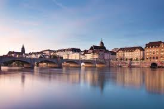

Die Kulturstadt für Geniesser bietet mit 40 Museen die höchste Museumsdichte des Landes. Zudem verfügt Basel über eine schöne Altstadt, moderne Architektur und den Rhein, der zum Verweilen einlädt.
Kaum eine andere Stadt hat ihre historischen Züge so bewahrt wie Bern, die Hauptstadt der Schweiz. Die Berner Altstadt ist UNESCO-Welterbe und besitzt mit 6 Kilometern Arkaden, den so genannten Lauben, eine der längsten wettergeschützten Einkaufspromenaden Europas.
Eingebettet in ein eindrückliches Bergpanorama liegt Luzern, das Tor zur Zentralschweiz, am Vierwaldstättersee. Die Stadt ist dank ihrer Sehenswürdigkeiten, dem attraktiven Shoppingangebot, der einzigartigen Lage am See und der nahen Ausflugsberge Rigi, Pilatus oder Stanserhorn Ziel vieler Reisegruppen und Individualgäste auf ihrer Reise quer durch die Schweiz.
Eingebettet zwischen nahen Alpengipfeln und dem Hügelzug des Juras liegt die französischsprachige Stadt Genf in der Bucht, wo die Rhone den Genfersee verlässt. "Hauptstadt des Friedens" wird der europäische Sitz der UNO und Hauptsitz des Roten Kreuzes genannt, mit seiner humanitären Tradition und dem weltstädtischen Flair.